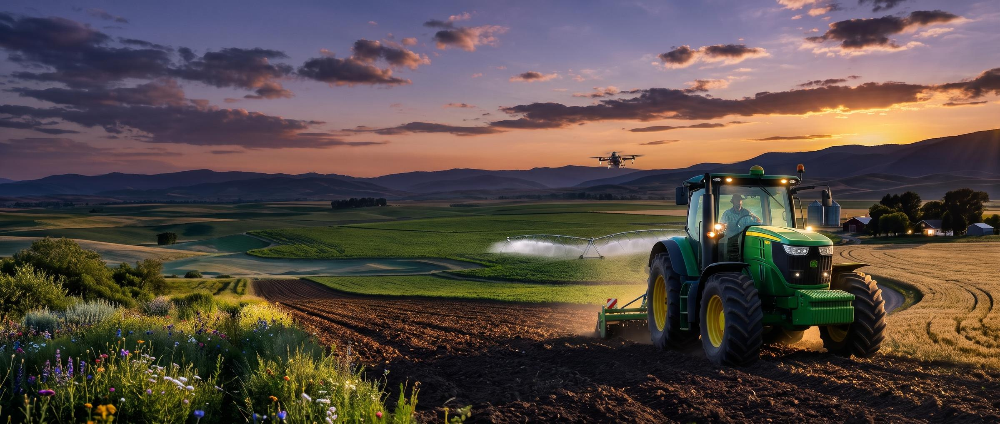
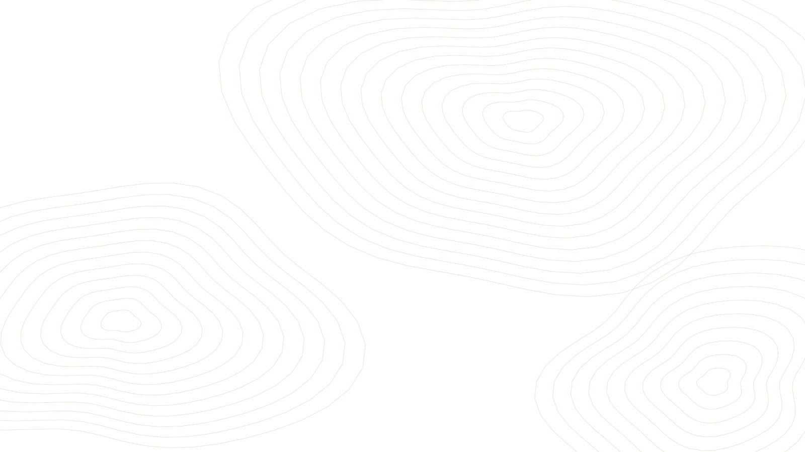

Margin per hectare, crop by crop
See what each crop left you after costs, not just what it sold for.

Field-by-field money
A money app for Romanian farms that shows what each crop earns, when cash gets tight and what to set aside for spring.
Sample data. Dealu Verde is a fictional 42 ha farm. Nothing here moves real money.

Four steps, each small enough to finish between jobs on the farm.
Add a sale or an expense in a few taps, and undo it if you slip.
Loan payments, land rent and input bills, listed before they land.
Find costs worth a second look and move them toward spring inputs.
Twelve months of cash, with a poor, expected and good harvest.
A quick look at what the app keeps track of, using the Dealu Verde sample farm.
See what each crop left you after costs, not just what it sold for.
Loans, rent and input bills in one list, with subsidies marked as estimates.
Six cost groups and their share of 162.500 lei, at a glance.
Three small costs could free up money this month. In this demo the reserve is simulated.
Switch the harvest and watch the year change. A range, not a promise.
Every forecast shows a poor, expected and good harvest side by side.
Subsidies, stored crops and pending payments carry a clear label.
This demo connects to no bank, and nothing here moves real money.
Every sale, expense and transfer comes with an Undo.
Explore Dealu Verde first. No sign-up and no bank connection needed.
Open the sample farm